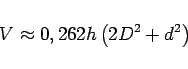
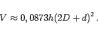
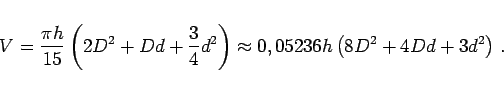

Inhalt Index DeskTop Bronstein

 Geometrie Stereometrie Körper, die durch gekrümmte Flächen begrenzt sind
Geometrie Stereometrie Körper, die durch gekrümmte Flächen begrenzt sind


Tonnenkörper enstehen durch Drehung einer Erzeugenden mit entsprechender Krümmung; Kreistonnenkörper durch Drehung eines Kreissegments, parabolische Tonnenkörper durch Drehung eines Parabelausschnittes.
|  | (3.176a) |
oder
|  | (3.176b) |
|  | (3.177) |